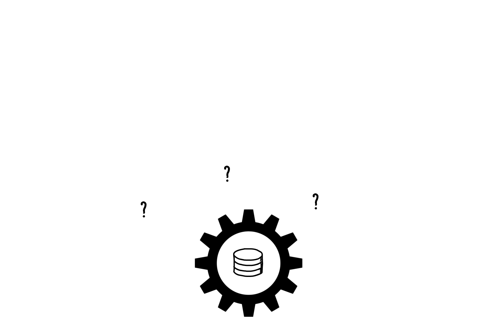
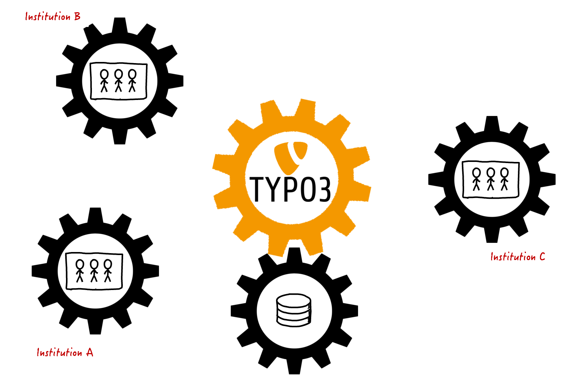

17.09.2019 | TYPO3 University Day 2019
TYPO3 goes LOD
Ways to open research data
Slides: https://digicademy.github.io/2019_typo3_goes_lod/
Sarah Pittroff und
Patrick Toschka, Akademie Mainz
 @digicademy |
@digicademy |
 digicademy |
CC-BY 4.0
digicademy |
CC-BY 4.0


Structure
- Academies of Sciences in Germany
- Digital Academy Mainz
- TYPO3 Portfolio
- Beaconizer Extension
- Vocabulary Extension (soon: tx_lod)
- Linked Data Vocabularies
- Statements about TYPO3 Datasets
- LOD API with Persistent Identifiers
- Questions
1. Academies of Sciences in Germany
The Union of the German Academies of Sciences and Humanities is the umbrella organisation of eight German academies of sciences and humanities.
2. Digital Academy Mainz
Digital Humanities Research Team at the Academy Mainz
The spectrum comprises the conception, design and implementation of research applications and environments in the humanities, the consulting of the Academy on all aspects of digitality and the project support for the implementation of digital components together with partners from science and industry.
At the same time, research on core issues in the digital humanities as well as the teaching and training of young academics from the DH are of great importance.
- Team of humanities scholars, computer scientists and employees with dual qualifications
- Digital Humanities with application orientated research
- Inclusion of methods from the free economy and software industry
- 25 projects, in which TYPO3 plays a significant role
-
6 TER/GitHub published extensions, about
30 internal / project specific extensions for different fields of application, of which
10 are in prepartion for publication
3. TYPO3
Portfolio

Regesta Imperii Online
- Database with 185.000 full text charters
- Literature database with 2.3 million titles on the European Middle Ages
- Complex Boolean search logic with spelling tolerance
- All regests in CEI via system-neutral REST interface (license CC-BY)

Website: http://www.corpusvitrearum.de
Corpus Vitrearum Digital
- High-resolution TIFF images for free download (CC-BY)
- Metadata embedded as XMP (ISO standard)
- Content indexing with controlled vocabulary (ICONCLASS)
- REST interfaces for metadata in XMP and JSON-LD (Semantic Web)

Website: http://www.inschriften.net
Deutsche Inschriften Online
- 52 inscription volumes or stocks with approx. 22,000 catalogue numbers and 22,000 illustrations
- Flexible XML workflows for the transfer from the printed edition into the application
- Persistente Referenzierung aller Artikel mittels URN der Deutschen Nationalbibliothek
- Persistent referencing of all articles using the URN of Deutsche Nationalbibliothek

Controversia & Confessio Digital
- Source and person database with complex relationships (authors, opponents, printing technicians, etc.)
- Extensive search options (role-based, chronological, geographical)
- Preparation of data for historical network analysis
- Web frontend completely based on Responsive Web / Mobile First approach

Website: http://www.namenforschung.net
Digitales Familiennamenwörterbuch
- Digital edition environment, based on native XML database, name article data encoded in TEI
- Mapatop application for mapping surnames on the basis of telephone connections (as of 2005)
- REST-based application architecture with TYPO3 frontend for displaying and researching name articles
4. Beaconizer Extension
Normdata aggregator and provider
4. Beaconizer Extension
Normdata aggregator and provider
BEACON file from the Rheinland-Pfälzische Personendatenbank
4. Beaconizer Extension
Normdata aggregator and provider
4. Beaconizer Extension
Normdata aggregator and provider
4. Beaconizer Extension
Normdata aggregator and provider
4. Beaconizer Extension
Normdata aggregator and provider
- Decentralized networking of electronic resources via normdata
- GND as an identifier standard for persons
- More information: Wikipedia
- BEACON Findbuch Webservice
5. Vocabulary Extension
Vocabularies | LOD Statements | API
5. Vocabulary Extension
Vocabularies | LOD Statements | API
Three separate but semantically linked functionalities:
- Linked Data Vocabularies
- Statements about data records within the TYPO3 system
- API with persistent Identifiers and content negotiation

5. Vocabulary Extension
Step 1: Vocabularies
- Add (external or own) vocabularies with URI and namespaces
- Add terms from the vocabularies
- Articulate triple statements with Subjects, Predicates and Objects
- Publish your own vocabulary with persistent namespace
{kind=link}
5. Vocabulary Extension
Step 2: LOD Statements about TYPO3 data records
- "Talk" about records in the TYPO3 system with triple statements
(-> second data layer) - Publish your statements as LOD over a (REST) API
{kind=link}
5. Vocabulary Extension
Step 3: Resolver with Content Negotiation
5. Vocabulary Extension
Step 3: API with Content Negotiation
URI (Permalink)
https://corpusvitrearum.de/id/F3431
Accept: ld-json
https://corpusvitrearum.de/id/F3431/about.json
Accept: rdf+xml
https://corpusvitrearum.de/id/F3431/about.rdf
Accept: text/turtle
https://corpusvitrearum.de/id/F3431/about.ttl
5. Vocabulary Extension
Bonus: I-SAW Feature
5. Vocabulary Extension
Exkurs: Stained glass research
5. Vocabulary Extension
Exkurs: Stained glass and storytelling
- Titel: Himmelfahrt Christi
- Iconclass Notifikation 73E425
- Iconclass Notifikation 73E44
- Iconclass Notifikation 48C14
- Iconclass Notifikation 48AA98312
5. Vocabulary Extension
Bonus: I-SAW Feature
5. Vocabulary Extension
Bonus: I-SAW Feature
Questions
Links, Software & Subsequent Use
Used Software
- Impress.js (Presentation)
- Open Sans (Google Font)
- Magnific Popup (Lightbox)
- Swiper (Responsiver Slider)
- Unite Gallery (Bildergallerie)
License
- Link: https://digicademy.github.io/2019_typo3_goes_lod/
- Lizenz: CC-BY 4.0, Sarah Pittroff und Patrick Toschka